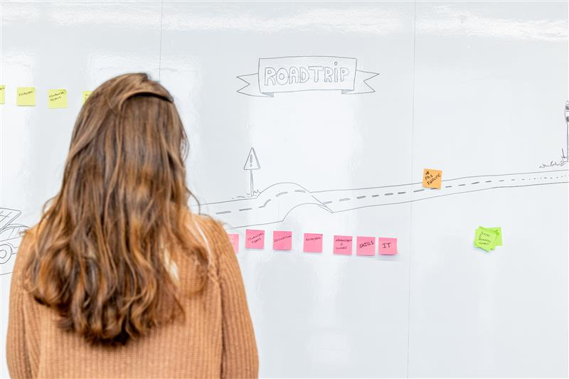

My Skills.
Discover my key competencies and specificities.
-

Product Strategy.
Able to define product vision, align teams, and uncover user needs through frameworks like Design Thinking and Lean Startup. Skilled at turning insights into actionable strategies that drive growth.
-
UX design.
Skilled in creating user-centered experiences through research, prototyping, and testing. I thrive to deliver intuitive, accessible designs that balance usability, impact, and brand consistency.
-
Stakeholders Engagement.
Able to communicate to C-level executives. Experienced in fostering collaboration and alignment across teams: facilitating workshops, building a culture of trust, creativity, and shared ownership.
What my colleagues say about me
"J'ai été ravi de travailler avec Alexia.
Elle a montré d'excellentes capacités à analyser des situations complexes et à en tirer des livrables clairs et pratiques de type blueprint, dont elle maîtrise la restitution orale à la perfection, pour tout type de public, depuis l'opérationnel jusqu'au cadre dirigeant.
Elle sait très bien tirer parti des méthodologies et frameworks usuels, et est capable d'empathie utilisateur y compris sur des aspects très techniques, qu'elle appréhende sans difficulté apparente.
D'un naturel enjoué, facile d'accès, elle pousse ses convictions dans l'intérêt collectif. Ces 2 années de collaboration ont été un vrai plaisir."
- Hervé Coatanea, Business Director
-
Sleek interfaces
-
Data-oriented
-
Teamwork
-
Quick learner